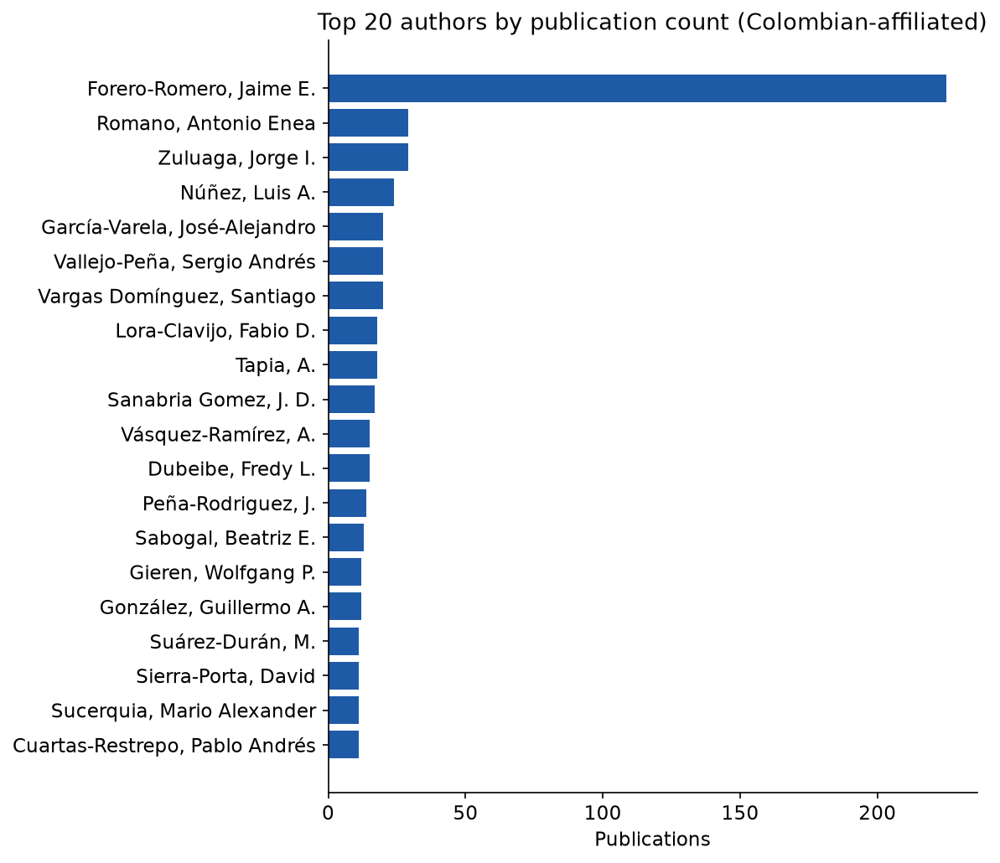
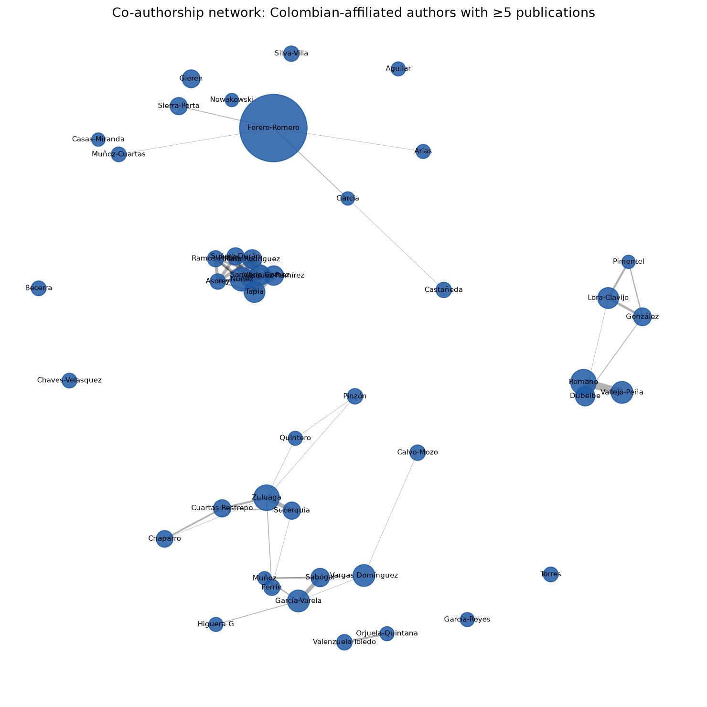

Scope & Caveats
This note updates the institutional and authorship trends reported in Forero‑Romero (2024) using a fresh NASA ADS export, but it is a narrower instrument than that paper, built without Web of Science and without a controlled author registry. Five limitations bound every figure and table below.
- 01There is no author identifier (ORCID) in this export. Name variants — “J. E.” vs. “Jaime E.”, inconsistent compound-surname splits, occasional metadata typos — are merged by a conservative surname+initials heuristic. It can still split or over-merge a handful of individuals.
- 02The largest collaboration papers — DESI, LIGO/Virgo/KAGRA, Pierre Auger — have author lists truncated at 200 by this ADS export template. Authorship-size and collaboration-rate figures undercount those papers, in some cases by an order of magnitude.
- 03Institution attribution is a substring match against free-text affiliation strings, not a controlled ROR/GRID lookup. About 3% of Colombia-mentioning affiliations fall into an unclassified “other” bucket rather than a named institution.
- 04Citation counts are a single ADS snapshot, not a time series. “Citations per year” below is total citations divided by paper age — a proxy for impact, not an observed citation-rate curve.
- 05A single in-press 2027 record is excluded throughout as too sparse a bucket to interpret.
None of this overturns the broad trend: Colombian-affiliated astronomy output has grown by roughly two orders of magnitude since 1980 under any reasonable set of choices. But single data points — and especially the smaller institutions, low publication counts, and any figure touching the mega-collaborations — should be read as descriptive, not precise.
We compile 723 astronomy and astrophysics publications indexed in NASA’s Astrophysics Data System with at least one Colombian-affiliated author, spanning 1980 through 2026. The record set spans 56 journals and, after heuristic name-matching, about 380 individual researchers across 33 identified institutions, together accounting for over 26,500 citations and an overall h-index of 65. We report growth trends, collaboration-size effects, citation patterns, institutional and author rankings, venue and topic distributions, and a co-authorship network, following the descriptive approach of Forero‑Romero (2024) wherever the underlying data permit. Universidad de los Andes, Universidad de Antioquia, Universidad Nacional de Colombia, and Universidad Industrial de Santander remain the four largest contributors — consistent with the earlier study’s central finding despite three additional years of data and a different source database.
Data & Methods
Two ADS custom-format exports — one broad, one narrower — were concatenated and de-duplicated by bibcode into a single set of 723 unique records with no overlap between the two source queries. A second ADS export template, matched back onto the first by row position and verified by title comparison, supplied citation counts that the primary tagged format doesn’t carry. Institutions were identified by matching each free-text affiliation string against a curated list of Colombian university names and their English ADS-normalized forms (e.g. “National University of Colombia” for Universidad Nacional); author names were consolidated by the surname+initials heuristic described above. Full methodology, parser code, and both source exports are in the linked repository.
Growth of Output
Cumulative output has grown by close to two orders of magnitude since 1980, with the clearest acceleration from the early 2010s onward — consistent with the “consolidation phase” that Forero‑Romero (2024) dates to 2010–2019. Both panels below use a log axis; on a linear scale, the first three decades compress into an indistinguishable line at the bottom of the plot.

Collaboration Size
Mean authorship per paper was flat and low — typically under ten — until 2016, when it jumps sharply. That shift traces almost entirely to a handful of Colombian groups joining large international collaborations: DESI, LIGO/Virgo/KAGRA, and the Pierre Auger Observatory. Caveat 02 applies directly here: because those collaborations’ author lists are truncated at 200 in this export, the true post-2016 mean is understated, not overstated.


Citations
Total citations by publication year mirror the growth in output, compounded by the fact that older papers have simply had longer to accumulate citations (Caveat 04). Mean citations per publication is noisier but trends upward, punctuated by a few exceptionally cited single papers — most visibly the 2017 multi-messenger neutron-star merger discovery.

Citation rate — citations divided by years since publication, a crude control for paper age — correlates with collaboration size at Pearson r = 0.63 in log–log space: bigger author lists tend to sit on more heavily cited papers, unsurprising given how many of the largest collaborations (DESI, LIGO) are also among the most-cited fields in the dataset.

Institutions
Four institutions account for the large majority of institutionally-attributed output: Universidad de los Andes, Universidad de Antioquia, Universidad Nacional de Colombia, and Universidad Industrial de Santander — the same four that led Forero‑Romero (2024)’s ranking three years ago, now joined by a longer tail of smaller contributors. Because the range spans almost two orders of magnitude, the chart below uses a log axis.

| Institution | Pubs. | Authors | Citations | h | Active since |
|---|---|---|---|---|---|
| Universidad de los Andes | 298 | 66 | 12,603 | 47 | 1980 |
| Universidad de Antioquia | 99 | 71 | 2,098 | 22 | 2005 |
| Universidad Nacional de Colombia | 98 | 90 | 1,313 | 19 | 1980 |
| Universidad Industrial de Santander | 67 | 38 | 1,950 | 21 | 2006 |
| Universidad del Valle | 19 | 16 | 220 | 8 | 2012 |
| Universidad Tecnológica de Pereira | 17 | 12 | 112 | 5 | 1997 |
| Universidad de los Llanos | 14 | 1 | 42 | 4 | 2018 |
| Universidad de Nariño | 12 | 5 | 187 | 7 | 2015 |
| Universidad ECCI | 9 | 6 | 363 | 5 | 2017 |
| Universidad Tecnológica de Bolívar | 8 | 6 | 34 | 3 | 2022 |
Authors
Rankings below are restricted to authorships carrying a Colombian affiliation, so they aren’t swamped by the hundreds of non-Colombian members of the same mega-collaborations a Colombian group belongs to. The top spot is unsurprising in context: this note descends from the same author’s own ADS query and prior paper, so his complete bibliography — including large collaboration papers where he is one of many co-authors — is fully represented in a way a purely institutional search might not capture as exhaustively for every researcher. Treat the top row as a data-provenance artifact worth naming plainly rather than a claim about relative productivity.


| Author | Primary institution | Pubs. | Citations | Active |
|---|---|---|---|---|
| Forero-Romero, Jaime E. | Universidad de los Andes | 225 | 10,633 | 2013–26 |
| Zuluaga, Jorge I. | Universidad de Antioquia | 29 | 431 | 2013–25 |
| Vargas Domínguez, Santiago | Universidad Nacional de Colombia | 20 | 470 | 2012–26 |
| García-Varela, José-Alejandro | Universidad de los Andes | 20 | 224 | 2001–26 |
| Lora-Clavijo, Fabio D. | Universidad Industrial de Santander | 18 | 233 | 2015–26 |
| Dubeibe, Fredy L. | Universidad de los Llanos | 15 | 68 | 2017–26 |
| Romano, Antonio Enea | Universidad de Antioquia | 13 | 299 | 2013–25 |
| Sabogal, Beatriz E. | Universidad de los Andes | 13 | 100 | 2009–26 |
| González, Guillermo A. | Universidad Industrial de Santander | 12 | 185 | 2006–18 |
| Gieren, Wolfgang P. | Universidad Nacional de Colombia | 12 | 224 | 1980–92 |
Venues & Topics
Monthly Notices of the Royal Astronomical Society, The Astrophysical Journal, and the Journal of Cosmology and Astroparticle Physics together carry more than half of all output — the last driven largely by DESI collaboration papers. Keyword frequency, drawn from ADS-assigned subject tags, shows the field’s center of mass sitting squarely in cosmology and extragalactic astrophysics, with solar/stellar and high-energy phenomena as the next tier.


Most-Cited Works
The single most-cited paper with a Colombian author — by a wide margin — is the 2017 LIGO/Virgo multi-messenger discovery of a binary neutron star merger, with 4,140 citations. Eight of the remaining nine top-10 slots belong to DESI collaboration papers from 2022–2026, a direct consequence of Colombian groups’ recent entry into that survey.
| Title | Year | Citations | Authors |
|---|---|---|---|
| Multi-messenger Observations of a Binary Neutron Star Merger | 2017 | 4,140 | 200 |
| DESI 2024 VI: cosmological constraints from baryon acoustic oscillations | 2025 | 1,766 | 200 |
| Overview of the Instrumentation for the Dark Energy Spectroscopic Instrument | 2022 | 591 | 200 |
| DESI 2024 III: baryon acoustic oscillations from galaxies and quasars | 2025 | 544 | 198 |
| Data Release 1 of the Dark Energy Spectroscopic Instrument | 2026 | 520 | 200 |
| The NANOGrav 15 yr Data Set: Constraints on SMBH Binaries from the GW Background | 2023 | 467 | 115 |
| DESI 2024 IV: Baryon Acoustic Oscillations from the Lyman-α forest | 2025 | 380 | 199 |
| Tracing the cosmic web | 2018 | 364 | 30 |
| The DESI Bright Galaxy Survey: Final Target Selection, Design, and Validation | 2023 | 346 | 60 |
| New horizons for fundamental physics with LISA | 2022 | 341 | 141 |
Author counts of 200 mark the export truncation described in Caveat 02, not necessarily the true collaboration size — several of these papers have real author lists in the thousands.
Data & Code Availability
All source exports, the parsing and analysis pipeline, and every figure and table above are published under an MIT license.
- Repository
- github.com/forero/colombia-astronomy-bibliometrics
- Source data
- NASA ADS custom-format exports, queried 2026
- Prior work
- Forero‑Romero, J. E. (2024). “Astronomy in Colombia: a bibliometric perspective.” arXiv:2403.02255